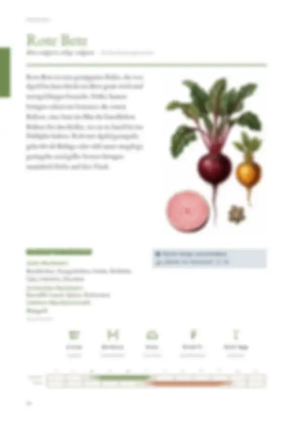
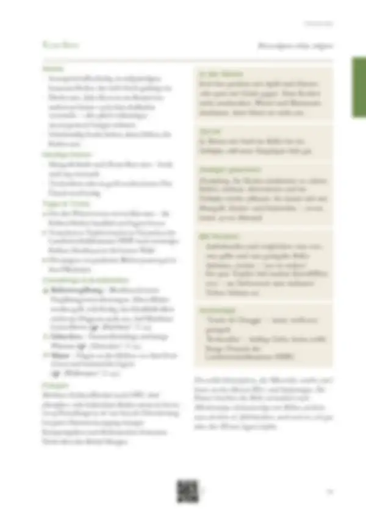

Tippe eine Quelle an, um zu sehen, wo sie verwendet wird – oder tippe auf einen Bereich der Seite.
20 Quellen dieser Doppelseite
Original · abgerufen am 26.10.2026 · ● belegtVerwendet in: Zusammenfassung (Seite allgemein), Düngen, Düngen, Punkt 1
Original · abgerufen am 26.10.2026 · ◐ ErfahrungVerwendet in: Zusammenfassung (Seite allgemein), Schädlinge & Krankheiten, Schädlinge & Krankheiten, Punkt 2
Original · abgerufen am 26.10.2026 · ● belegtVerwendet in: Zusammenfassung (Seite allgemein), Sicherheitshinweis „Nitrat im Gemüse“, Düngen, Düngen, Punkt 1
Original · abgerufen am 26.10.2026 · ◐ ErfahrungVerwendet in: Zusammenfassung (Seite allgemein), Piktogramm-Leiste, Häufige Fehler, Häufige Fehler, Punkt 1
Original · abgerufen am 26.10.2026 · ◐ ErfahrungVerwendet in: Zusammenfassung (Seite allgemein), Piktogramm-Leiste, Monatsleiste, Anbau, In der Küche, Anbau, Punkt 1, Anbau, Punkt 2, Vorrat, Tipps & Tricks, Tipps & Tricks, Punkt 3
Original · abgerufen am 26.10.2026 · ● belegtVerwendet in: Zusammenfassung (Seite allgemein), Monatsleiste, Tipps & Tricks, Tipps & Tricks, Punkt 2, Sortentipp
Original · abgerufen am 26.10.2026 · ● belegtVerwendet in: Zusammenfassung (Seite allgemein), Monatsleiste, Tipps & Tricks, Tipps & Tricks, Punkt 2, Sortentipp
Original · abgerufen am 26.10.2026 · ◐ ErfahrungVerwendet in: Zusammenfassung (Seite allgemein), Nachbarn, Piktogramm-Leiste, Monatsleiste, Anbau, In der Küche, Anbau, Punkt 1, Anbau, Punkt 2, Vorrat, Anbau, Punkt 3, Häufige Fehler, Häufige Fehler, Punkt 1, Saatgut gewinnen, Häufige Fehler, Punkt 2, Tipps & Tricks, Tipps & Tricks, Punkt 1, Mit Kindern, Schädlinge & Krankheiten, Schädlinge & Krankheiten, Punkt 3
Original · abgerufen am 26.10.2026Verwendet in: Zusammenfassung (Seite allgemein), Mit Kindern, Sortentipp
Original · abgerufen am 28.10.2026 · ◐ ErfahrungVerwendet in: Zusammenfassung (Seite allgemein), Schädlinge & Krankheiten, Schädlinge & Krankheiten, Punkt 1
Original · abgerufen am 28.10.2026 · ◐ ErfahrungVerwendet in: Zusammenfassung (Seite allgemein), Sortentipp
Original · abgerufen am 28.10.2026 · ◐ ErfahrungVerwendet in: Sicherheitshinweis „Nitrat im Gemüse“
Original · abgerufen am 26.10.2026 · ● belegtVerwendet in: Sicherheitshinweis „Nitrat im Gemüse“
Original · abgerufen am 26.10.2026 · ● belegtVerwendet in: Sicherheitshinweis „Nitrat im Gemüse“
Original · abgerufen am 26.10.2026 · ● belegtVerwendet in: Sicherheitshinweis „Nitrat im Gemüse“
Original · abgerufen am 26.10.2026 · ● belegtVerwendet in: Sicherheitshinweis „Nitrat im Gemüse“, Monatsleiste
Original · abgerufen am 27.10.2026 · ● belegtVerwendet in: Sicherheitshinweis „Nitrat im Gemüse“, Geschichte, Seite allgemein
Original · abgerufen am 26.10.2026 · ◐ ErfahrungVerwendet in: Nachbarn
Original · abgerufen am 26.10.2026 · ○ ÜberlieferungVerwendet in: Nachbarn
Original · abgerufen am 26.10.2026 · ◐ ErfahrungVerwendet in: Nachbarn
● belegt (Versuch, Fachinstitut) · ◐ Erfahrung (Beratung, Praxis) · ○ Überlieferung. Abschnitte ohne eigene Quellenangabe in den Daten zeigen die Quellen der ganzen Seite („Seite allgemein“).